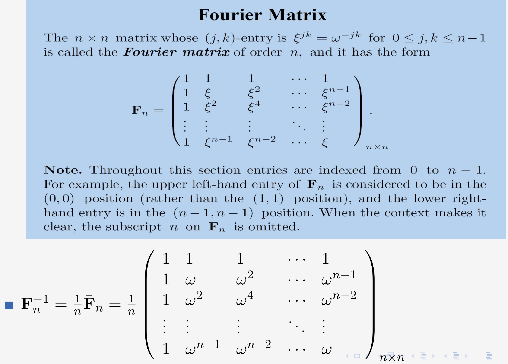
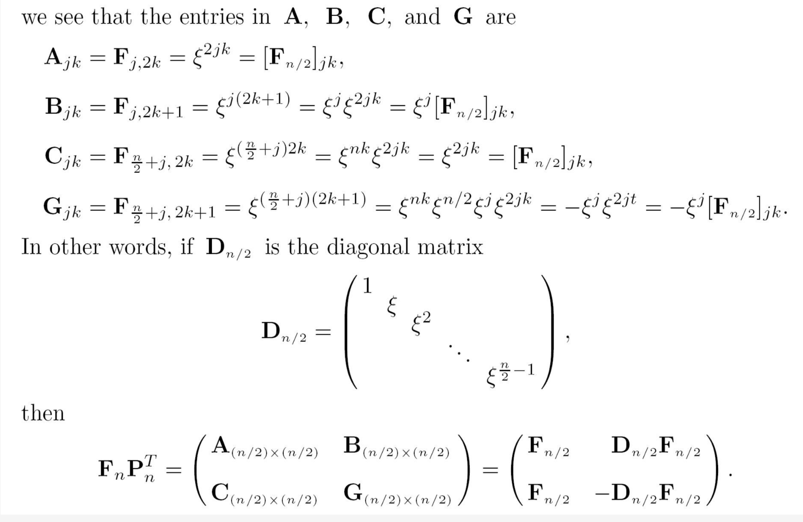
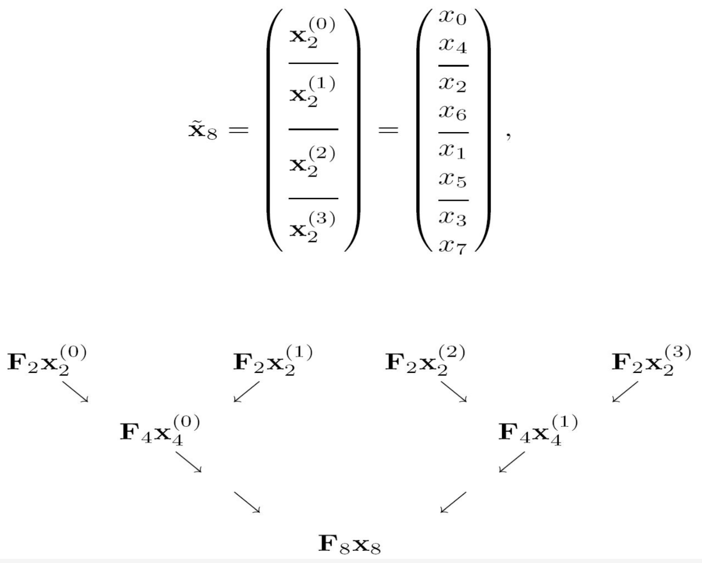
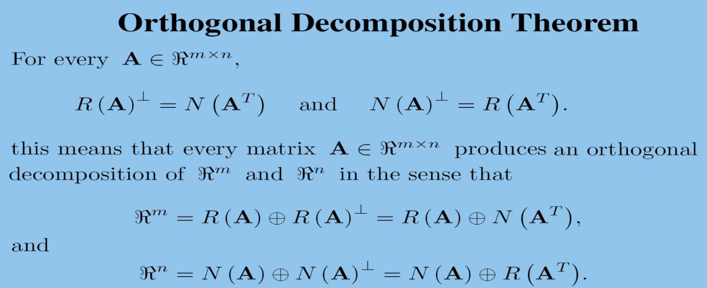
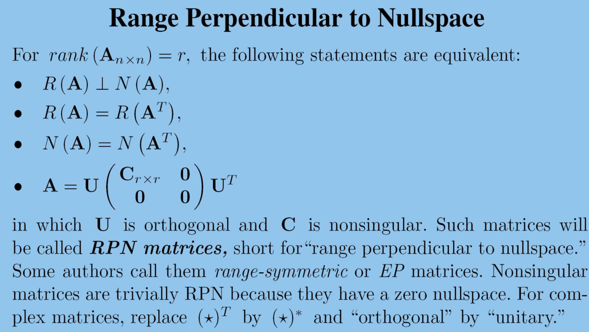
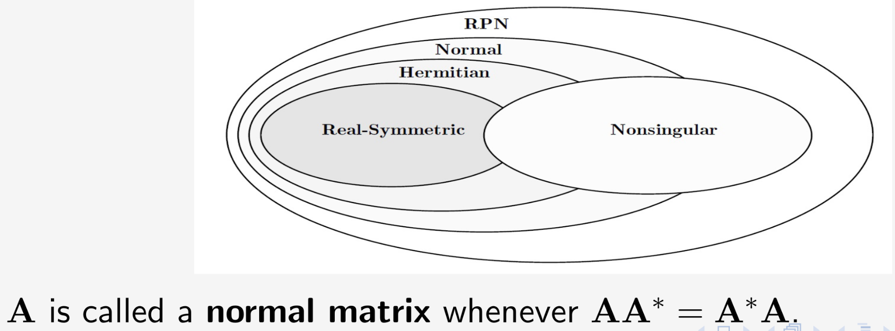
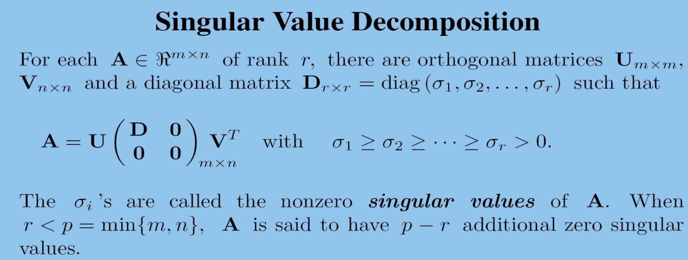

模和内积 二
Orthgonal Reduction
Household 也可以像高斯消元一样，将将一个矩阵变换为行阶梯型。
Household reduction
对于一个矩阵 \(A_{m\times n} = [ A_{*1},A_{*2},...,A_{*n} ]\)
先构建第一个 elementary reflector ：\(R_1 = I - 2 \frac{u u^*}{u^* u}\) 其中 \(u = A_{*1} \pm \mu ||A*1||e_1\)
那么 \(R_1 A_{*1} = \mp \mu ||A_{*1} e_1 = (t_{11},0,...,0)^T\)
则应用于矩阵之后可以得到
那么对于 \(A_2\) 构造 elementary reflector 记为 \(\widehat{R_2}\)。
那么记
则：
同样的步骤执行 \(k-1\) 步，即可化为行阶梯型
Givens reduction 也可以进行同样的过程，都是 \(A = QR\)
解决最小二乘解的问题
其实就是最小化 \(\sum_i \varepsilon_i^2 = \varepsilon^t\varepsilon = ||\varepsilon||^2\)
那么假设A可以消元为T被正交矩阵P(保长度的)，PA=T
就是说需要最小化 \(||Rx - c||^2\)
我们现在有四种不同的方式进行分解1. Gaussian 消元2. Gram-Schmidt 正交化 3. Householder 4. Givens
假设浮点运算，产生了一个正交矩阵 Q + E,一个上三角矩阵 R+F
\(\widehat{A} = (Q + E)(R+F) = QR + QF + ER + EF = A + QF + ER + EF\)
E,F都是一个很小的误差，那么 \(EF\) 乘积也是很小的误差，可以忽略。
然后由于Q是正交的，\(||QF||_F = ||F||_F\)并且 \(||A||_F = ||QR||_F = ||R||_F\)
\(||ER||_F \le ||E|| ||R|| = ||E|| ||A||\) 由于E比较小，所以相对于A也比较小。
QF,ER相对于A都是较小的，所以可以说算法是稳固的。 故对于微小扰动很稳固。
而对于高斯消元来说，
\(\widehat{A} = (L + E)(U+F) = A + LF + EU + EF\)
其中EF也是很小的，但是LF不能确定，因为L可能会很大。
但是可以使用部分主元法，这样会保证L中元素很小，因为L中存储的就是消元时倍数。
EU不能忽视，U可能会很大，全部主元法可以将让U也变得很小。
所以全部主元法，是一个稳定的算法。
Fourier Transform
我们可以定义 \(\omega= e^{2\pi i / n} = cos \frac{2\pi}{n} + i sin \frac{2\pi}{n}\)
那么这个其实就是 \(Z^n = 1\) 这个方程所有的解。
同样可以定义 \(\xi = e^{-2\pi i / n} = cos \frac{2\pi}{n} - i sin \frac{2\pi}{n}\)
傅里叶变换其实就是一个特殊的 Vandermonde 矩阵。该矩阵是正交，但是不是标准的。就是说 \(\frac{1}{\sqrt{n}}F_n\) 是一个 酉矩阵。
对于该矩阵的逆计算也很方便，可以通过傅里叶矩阵的共轭转置再除以n，这里n就是补偿之前的 \(\sqrt{n}\)。

对于一个向量做傅里叶变换即 \([F_n x]_k = \sum_j x_j \varepsilon ^{jk}\)，对于逆变换，其实可以通过先对x求共轭转置，然后做一次傅里叶变换，再除以n即可得到。
傅里叶变换可以进行信号的处理，也可以解决卷积乘法（多项式乘法）
傅里叶变换可以将原先复杂度卷积乘法转化为简单的对应元素相乘。
这里只是简单的傅里叶变换时间花费是很大的，然后有一种更快的方法。
对于求解 \(F_n x\) 考虑分解成子问题，将偶数列向前移动，就可以得到 \(F_n P^T P x\)。如下所示：

可以进行递归分解。最终的的计算其实是通过这个递归就转化为了多个向量的加加减减。

这样计算快速傅里叶可以达到时间复杂度为 \(O(\frac{n}{2} log_2n)\)
Complementary Subspace
定义：当 \(\mathcal{V}\) 的子空间 \(\mathcal{X},\mathcal{Y}\) 满足 \(\mathcal{V} = \mathcal{X} + \mathcal{Y}\) 并且 \(\mathcal{X} \cap \mathcal{Y} = 0\)
可以称 direct sum ，是这两个空间运算出整个空间。
这里必须是沿着某个方向向另一个方向进行投影，因为对于一个子空间 \(\mathcal{X}\) 可以有多个补空间，即补空间不唯一，所以不能直接说向某个子空间做投影。
沿着不同的子空间可能会导致不同的结果。
一个矩阵可以分解成一个对称加上非对称，对称阵与反对称阵也是补向量
可以定义一个矩阵代表这个投影运算，\(Pv\)
Projector
\(P\) 是沿着 \(\mathcal{Y}\)向\(\mathcal{X}\)投影
- \(P^2 = P\)
- \(I - P\) 是沿着\(\mathcal{X}\) 向 \(\mathcal{Y}\) 投影矩阵
- 并且该矩阵作用在 \(\mathcal{X}\) 上不变即 \(Px=x\)
- \(R(P) = N(I-P) = \mathcal{X}\)
- \(R(I - P) = N(P) = \mathcal{Y}\)
- \(P = [X|0][X|Y]^{-1}\)
这里如果矩阵是幂等，则一定是投影矩阵，是冲要条件。
值零分解
Range-Nullspace decomposition
很合理的方向，去思考值空间和零空间这些基本子空间的关系。通过这些关系是否是互补子空间，来进行分解。
重点是考虑A是奇异矩阵的时候
先考虑对于一个矩阵，值空间和零空间是否是补空间。
这个向量即属于值空间，也属于零空间。所以这个对于一般矩阵来说是不成立的。
但是可以定义 \(A^k\)，因为矩阵越乘值空间越小，又因为行数的限制，所以最终值空间会小到一个界限不再小。
这个时候，\(A^k\) 的值空间和零空间是补空间。
这个\(k\)称为 \(index \space of \space A\)
\(Rank(A^k) = Rank(A^{k+1})\)
这里再引申一个概念，如果恰好这个时候 \(A^k=0\)，就称为幂零阵，nilpotent matrice
core-Nilpotent decompostion
对 \(n \times n\) 的奇异矩阵,核零分解
Q 是 \(A^K\) 的值域空间一组基与零空间一组基
Orthogonal Decomposition
正交分解。
定义M的正交补为 \(M^{\perp} = \{x\in \mathcal{v} | <m|x> = 0 \forall m \in M\}\) 组成的子空间。
四个基本子空间的关系

URV factorization
其中U的前r列是 \(R(A)\) 的标准正交基，后 \(m-r\)列是 \(N(A^T)\)的一组标准正交基
其中V的前r列是 \(R(A^T)\) 的标准正交基，后 \(m-r\) 列是 \(N(A)\) 的标准正交基。
这里URV与核零分解，URV是正交矩阵（保长度，角度），二核零是同一个线性变换在不同基下的表示。
对于一个特殊的矩阵RPN ，URV分解与核零分解是相同的。
 
SVD 分解
Singular value Decomposition
奇异值

正交投影
\(P_M = M(M^TM)^{-1}M^T\)
因为
所以对于这个可以直接使用投影矩阵来计算出P是什么
出了幂等 \(P^2=P\)，还需要下面条件即可是正交投影
- \(R(P) \perp N(P)\)
- \(P^T = P,(P^2 = P = P^T)\)
- \(||P||_2 = 1\)
最近点距离
\(min_m ||b - m||_2 = || b - P_M b||_2 = ||(I-P_M) b||_2\)
正交投影也可以做最小二乘
最小二乘解，对于Ax=b，如果不可解
那么我们希望找到 \(Pb \in R(A)\),\(P_{R(A)}Ax = P_{R(A)}b\)，左边本啦就是值域空间，作用之后不会改变。
\(P_{R(A)} (Ax - b) = 0\)，其中 \(Ax-b\) 就是 \(R(A)\) 正交补空间，\(R(A)\)的正交补就是\(N(A^T)\)，所以 A^T (Ax - b) = 0